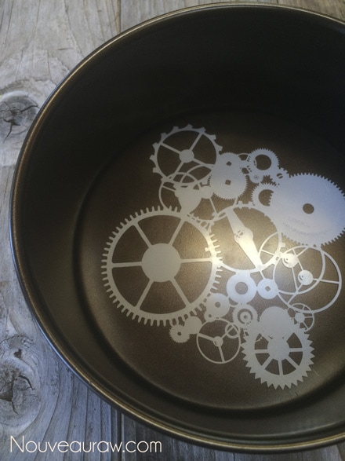
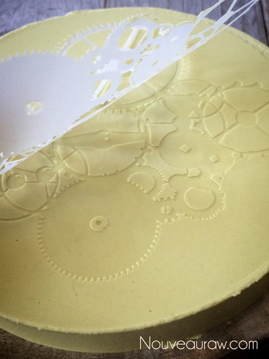
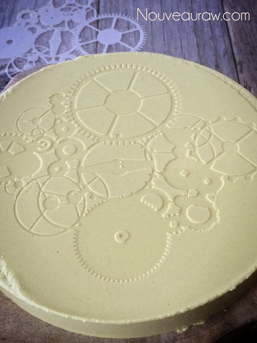

Sunflower Cheese Wheel
raw / vegan / gluten-free / nut-free
I absolutely adore making agar cheeses. The fact that you can use just about any mold that your imagination can come up with is downright liberating in the kitchen. You can use bowls ( shallow, deep, or somewhere in-between ), Tupperware containers, candy molds, bakers molds; you name it.
When I made this cheese, I wanted to create a cheese wheel for a gathering we were having. I thought it would make an excellent cheese and cracker presentation. I have a circular pan with a removable bottom, which I enjoy using, so I opted for that.
As I was digging out my pan, I happen to spy my container with stencils in it, and that got me to thinking… it would be awesome to leave some sort of impression on the cheese, turning it into a conversation piece. I just so happened to have picked up a gear stencil at a craft store sometime back… perfect! You can see the photos below of how turned out.
To head you all off, because I know you will ask for the recipe for the crackers in the photo… these are store-bought, gluten-free crackers. The BBQ that we were hosting was sprung on me a bit too late, and I didn’t have time to make any raw ones.
Ingredients:
yields: 1 (8″) wheel
Cheese base:
- 2 cups raw sunflower seeds, soaked 4+ hours
- 1 cup water
- 1/2 cup nutritional yeast
- 2 1/2 Tbsp lemon juice
- 2 tsp chickpea miso
- 2 tsp Himalayan pink salt
- 1/2 tsp onion powder
- 1/2 tsp garlic powder
- 1/2 tsp mustard powder
- 1/4 tsp turmeric
Agar gel:
Preparation:
Cheese base:
- After soaking the sunflower seeds, drain and rinse them before adding them to the blender.
- In a high-speed blender, combine the sunflower seeds, 1 cup water, nutritional yeast, lemon juice, miso, salt, and spices until it is smooth and creamy… free of any gritty feeling. Depending on the machine, this can take 1-3 minutes.
Agar gel:
- Once the cheese mixture is ready, it is time to make the agar gel.
- In a small saucepan, bring 1 cup of water to a light boil, add the agar.
- Stir continuously until the agar had dissolved, this can take several minutes. Keep whisking!
- If it gels up in the pan, return to heat and melt it down again.
- Start the blender and get a vortex going with the mixture. Drizzle in the agar gel and blend until combined. You will need to stay focused and move fairly quickly. Agar will start to set up as it cools.
- Pour into mold and then place in the fridge, uncovered, for at least 30 minutes. Eat sliced or shred!
- Note ~ I don’t use anything to prepare my molds to help them release once it has set. It is good about just popping out.
- Keep in the fridge for up to 5 days.



© AmieSue.com